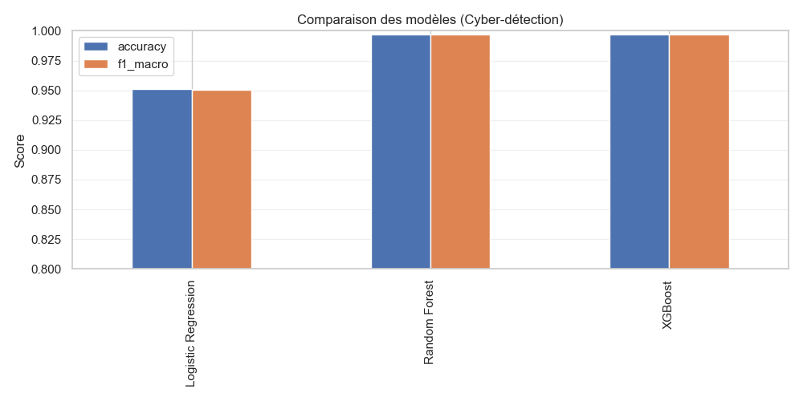
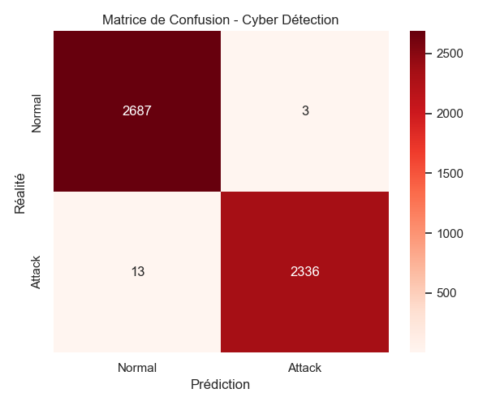
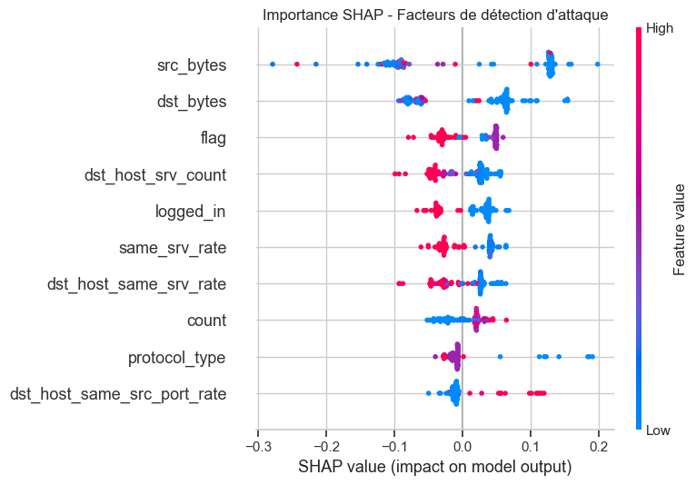

Détection d'intrusions sur flux réseau (NSL-KDD)
Réalisé par Ilyes Alouata / B3
| Dimension | Réponse |
|---|---|
| Problème métier | Détection proactive d'attaques réseau. |
| Variable cible (y) | label_binary (Normal vs Attaque) |
| Métrique principale | Recall (Crucial pour ne rater aucune attaque) |
| Risques identifiés | Faux positifs bloquant le trafic légitime. |
| Niveau AI Act | Haut risque (Infrastructures critiques) |


Quelles sont les signatures réseau qui trahissent une attaque ?

Le système est classé Haut Risque car il assure la sécurité d'infrastructures numériques essentielles et manipule des données de trafic sensibles.
| Critère | Analyse |
|---|---|
| Base légale RGPD | Intérêt légitime (Sécurité) |
| DPIA | Requis (Surveillance réseau systématique) |
| Supervision humaine | Indispensable via une équipe SOC dédiée. |